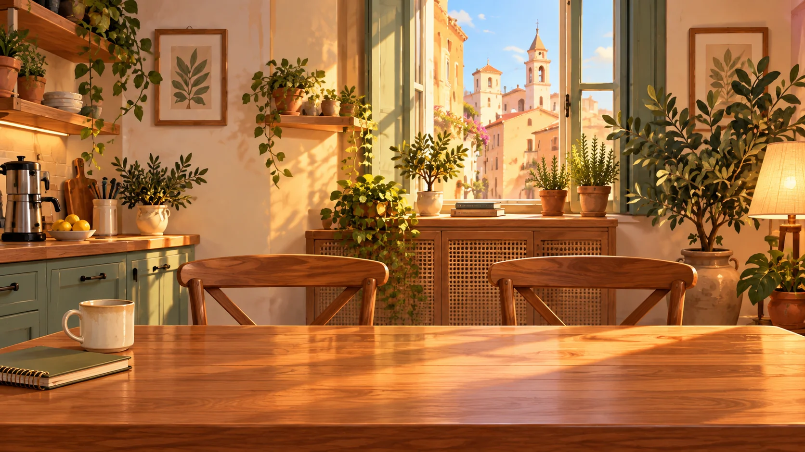

Il vostro prossimo viaggio
Due ospiti
Tre notti
✓ Soggiorno prenotato
Un soggiorno smart · BNBReady
Prima del viaggio
Meno inserimenti manuali
Un soggiorno smart
Un soggiorno inizia con una prenotazione.